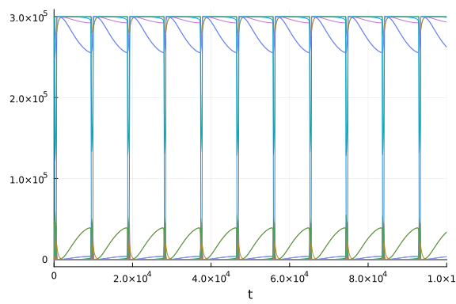
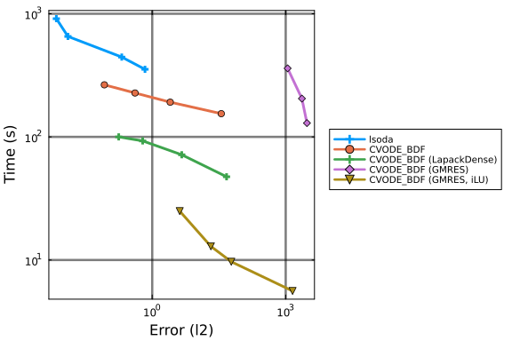
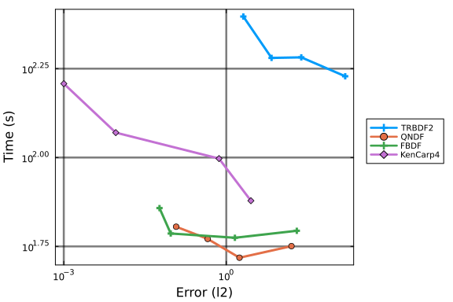
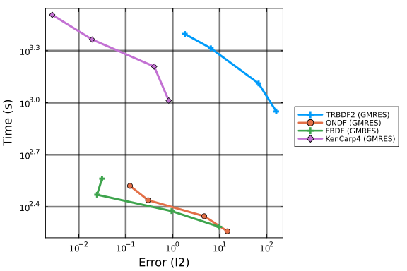
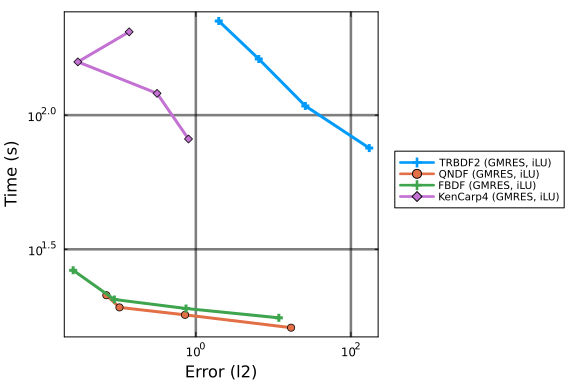
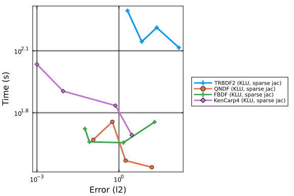
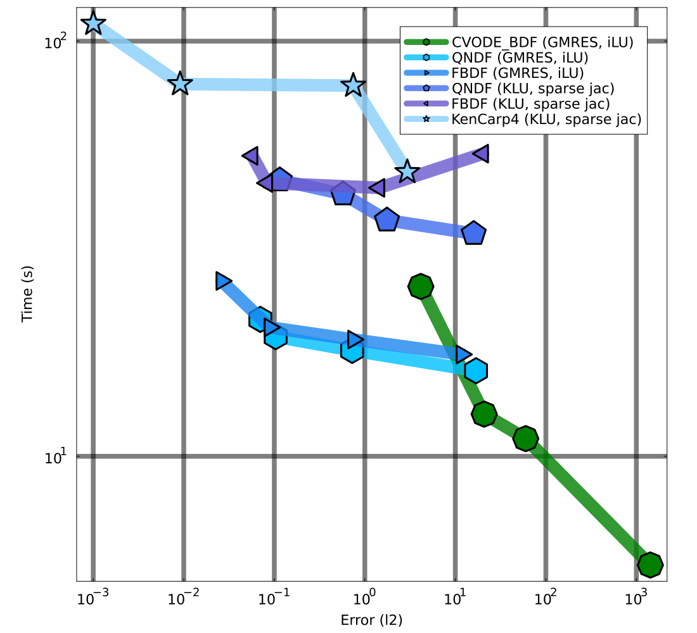

BCR Work-Precision Diagrams
The following benchmark is of 1122 ODEs with 24388 terms that describe a stiff chemical reaction network modeling the BCR signaling network from Barua et al.. We use ReactionNetworkImporters to load the BioNetGen model files as a Catalyst model, and then use ModelingToolkit to convert the Catalyst network model to ODEs.
using DiffEqBase, OrdinaryDiffEq, Catalyst, ReactionNetworkImporters,
Sundials, Plots, DiffEqDevTools, ODEInterface, ODEInterfaceDiffEq,
LSODA, TimerOutputs, LinearAlgebra, ModelingToolkit, BenchmarkTools,
LinearSolve, RecursiveFactorization
gr()
datadir = joinpath(dirname(pathof(ReactionNetworkImporters)), "../data/bcr")
const to = TimerOutput()
tf = 100000.0
# generate ModelingToolkit ODEs
@timeit to "Parse Network" prnbng = loadrxnetwork(BNGNetwork(), joinpath(datadir, "bcr.net"))
show(to)
rn = complete(prnbng.rn)
obs = [eq.lhs for eq in observed(rn)]
@timeit to "Create ODESys" osys = complete(convert(ODESystem, rn))
show(to)
tspan = (0.0, tf)
@timeit to "ODEProb No Jac" oprob = ODEProblem{true, SciMLBase.FullSpecialize}(
osys, Float64[], tspan, Float64[])
show(to)
oprob_sparse = ODEProblem{true, SciMLBase.FullSpecialize}(
osys, Float64[], tspan, Float64[]; sparse = true);Parsing parameters...done
Creating parameters...done
Parsing species...done
Creating species...done
Creating species and parameters for evaluating expressions...done
Parsing and adding reactions...done
Parsing groups...done
──────────────────────────────────────────────────────────────────────────
Time Allocations
─────────────────────── ────────────────────────
Tot / % measured: 7.52s / 97.1% 824MiB / 98.6%
Section ncalls time %tot avg alloc %tot avg
──────────────────────────────────────────────────────────────────────────
Parse Network 1 7.30s 100.0% 7.30s 813MiB 100.0% 813MiB
───────────────────────────────────────────────────────────────────────────
─────────────────────────────────────────────────────────────────────────
Time Allocations
─────────────────────── ────────────────────────
Tot / % measured: 15.0s / 87.4% 2.41GiB / 91.9%
Section ncalls time %tot avg alloc %tot avg
──────────────────────────────────────────────────────────────────────────
Parse Network 1 7.30s 55.9% 7.30s 813MiB 35.8% 813MiB
Create ODESys 1 5.77s 44.1% 5.77s 1.42GiB 64.2% 1.42GiB
───────────────────────────────────────────────────────────────────────────
──────────────────────────────────────────────────────────────────────────
Time Allocations
─────────────────────── ────────────────────────
Tot / % measured: 27.9s / 93.2% 5.51GiB / 96.5%
Section ncalls time %tot avg alloc %tot avg
───────────────────────────────────────────────────────────────────────────
ODEProb No Jac 1 13.0s 49.8% 13.0s 3.10GiB 58.3% 3.10GiB
Parse Network 1 7.30s 28.1% 7.30s 813MiB 14.9% 813MiB
Create ODESys 1 5.77s 22.2% 5.77s 1.42GiB 26.8% 1.42GiB
───────────────────────────────────────────────────────────────────────────@timeit to "ODEProb SparseJac" sparsejacprob = ODEProblem{true, SciMLBase.FullSpecialize}(
osys, Float64[], tspan, Float64[], jac = true, sparse = true)
show(to)───────────────────────────────────────────────────────────────────────────
───
Time Allocations
─────────────────────── ─────────────────────
───
Tot / % measured: 261s / 95.3% 115GiB / 97.5%
Section ncalls time %tot avg alloc %tot
avg
───────────────────────────────────────────────────────────────────────────
───
ODEProb SparseJac 1 222s 89.5% 222s 107GiB 95.3% 107
GiB
ODEProb No Jac 1 13.0s 5.2% 13.0s 3.10GiB 2.8% 3.10
GiB
Parse Network 1 7.30s 2.9% 7.30s 813MiB 0.7% 813
MiB
Create ODESys 1 5.77s 2.3% 5.77s 1.42GiB 1.3% 1.42
GiB
───────────────────────────────────────────────────────────────────────────
───@show numspecies(rn) # Number of ODEs
@show numreactions(rn) # Apprx. number of terms in the ODE
@show length(parameters(rn)); # Number of Parametersnumspecies(rn) = 1122
numreactions(rn) = 24388
length(parameters(rn)) = 128Time ODE derivative function compilation
As compiling the ODE derivative functions has in the past taken longer than running a simulation, we first force compilation by evaluating these functions one time.
u = oprob.u0
du = copy(u)
p = oprob.p
@timeit to "ODE rhs Eval1" oprob.f(du, u, p, 0.0)
@timeit to "ODE rhs spjac Eval1" sparsejacprob.f(du, u, p, 0.0)
show(to)───────────────────────────────────────────────────────────────────────────
─────
Time Allocations
─────────────────────── ───────────────────
─────
Tot / % measured: 404s / 97.0% 118GiB / 97.5
%
Section ncalls time %tot avg alloc %tot
avg
───────────────────────────────────────────────────────────────────────────
─────
ODEProb SparseJac 1 222s 56.7% 222s 107GiB 93.1% 1
07GiB
ODE rhs Eval1 1 144s 36.6% 144s 2.64GiB 2.3% 2.
64GiB
ODEProb No Jac 1 13.0s 3.3% 13.0s 3.10GiB 2.7% 3.
10GiB
Parse Network 1 7.30s 1.9% 7.30s 813MiB 0.7% 8
13MiB
Create ODESys 1 5.77s 1.5% 5.77s 1.42GiB 1.2% 1.
42GiB
ODE rhs spjac Eval1 1 8.30ms 0.0% 8.30ms 296KiB 0.0% 2
96KiB
───────────────────────────────────────────────────────────────────────────
─────We also time the ODE rhs function with BenchmarkTools as it is more accurate given how fast evaluating f is:
@btime oprob.f($du, $u, $p, 0.0)38.490 μs (2 allocations: 832 bytes)Js = similar(sparsejacprob.f.jac_prototype)
@timeit to "SparseJac Eval1" sparsejacprob.f.jac(Js, u, p, 0.0)
@timeit to "SparseJac Eval2" sparsejacprob.f.jac(Js, u, p, 0.0)
show(to)───────────────────────────────────────────────────────────────────────────
─────
Time Allocations
─────────────────────── ───────────────────
─────
Tot / % measured: 1.35h / 99.5% 122GiB / 97.5
%
Section ncalls time %tot avg alloc %tot
avg
───────────────────────────────────────────────────────────────────────────
─────
SparseJac Eval1 1 1.23h 91.9% 1.23h 3.75GiB 3.2% 3.
75GiB
ODEProb SparseJac 1 222s 4.6% 222s 107GiB 90.1% 1
07GiB
ODE rhs Eval1 1 144s 3.0% 144s 2.64GiB 2.2% 2.
64GiB
ODEProb No Jac 1 13.0s 0.3% 13.0s 3.10GiB 2.6% 3.
10GiB
Parse Network 1 7.30s 0.2% 7.30s 813MiB 0.7% 8
13MiB
Create ODESys 1 5.77s 0.1% 5.77s 1.42GiB 1.2% 1.
42GiB
ODE rhs spjac Eval1 1 8.30ms 0.0% 8.30ms 296KiB 0.0% 2
96KiB
SparseJac Eval2 1 122μs 0.0% 122μs 1.86KiB 0.0% 1.
86KiB
───────────────────────────────────────────────────────────────────────────
─────Picture of the solution
sol = solve(oprob, CVODE_BDF(), saveat = tf/1000.0, reltol = 1e-5, abstol = 1e-5)
plot(sol; idxs = obs, legend = false, fmt = :png)
Generate Test Solution
@time sol = solve(oprob, CVODE_BDF(), abstol = 1/10^12, reltol = 1/10^12)
test_sol = TestSolution(sol);617.343973 seconds (6.65 M allocations: 2.124 GiB, 0.35% gc time, 0.10% com
pilation time)Setups
Sets plotting defaults
default(legendfontsize = 7, framestyle = :box, gridalpha = 0.3, gridlinewidth = 2.5)Declare pre-conditioners
using IncompleteLU, LinearAlgebra
const τ = 1e2
const τ2 = 1e2
jaccache = sparsejacprob.f.jac(oprob.u0, oprob.p, 0.0)
W = I - 1.0*jaccache
prectmp = ilu(W, τ = τ)
preccache = Ref(prectmp)
function psetupilu(p, t, u, du, jok, jcurPtr, gamma)
if !jok
sparsejacprob.f.jac(jaccache, u, p, t)
jcurPtr[] = true
# W = I - gamma*J
@. W = -gamma*jaccache
idxs = diagind(W)
@. @view(W[idxs]) = @view(W[idxs]) + 1
# Build preconditioner on W
preccache[] = ilu(W, τ = τ)
end
end
function precilu(z, r, p, t, y, fy, gamma, delta, lr)
ldiv!(z, preccache[], r)
end
function incompletelu(W, du, u, p, t, newW, Plprev, Prprev, solverdata)
if newW === nothing || newW
Pl = ilu(convert(AbstractMatrix, W), τ = τ2)
else
Pl = Plprev
end
Pl, nothing
end;Sets tolerances
abstols = 1.0 ./ 10.0 .^ (5:8)
reltols = 1.0 ./ 10.0 .^ (5:8);Failures
Before proceeding to the results, we note the notable omissions. CVODE with KLU diverges in the solution, and thus it is omitted from the results:
solve(sparsejacprob, CVODE_BDF(linear_solver = :KLU), abstol = 1e-8, reltol = 1e-8);Work-Precision Diagrams (CVODE and lsoda solvers)
Declare solvers.
setups = [
Dict(:alg=>lsoda(), :prob_choice => 1),
Dict(:alg=>CVODE_BDF(), :prob_choice => 1),
Dict(:alg=>CVODE_BDF(linear_solver = :LapackDense), :prob_choice => 1),
Dict(:alg=>CVODE_BDF(linear_solver = :GMRES), :prob_choice => 1),
Dict(
:alg=>CVODE_BDF(linear_solver = :GMRES, prec = precilu, psetup = psetupilu, prec_side = 1),
:prob_choice => 2)
];Plot Work-Precision Diagram.
wp = WorkPrecisionSet(
[oprob, oprob_sparse, sparsejacprob], abstols, reltols, setups; error_estimate = :l2,
saveat = tf/10000.0, appxsol = [test_sol, test_sol, test_sol], maxiters = Int(1e6), numruns = 1)
names = ["lsoda" "CVODE_BDF" "CVODE_BDF (LapackDense)" "CVODE_BDF (GMRES)" "CVODE_BDF (GMRES, iLU)" "CVODE_BDF (KLU, sparse jac)"]
plot(wp; label = names)
Work-Precision Diagrams (various Julia solvers)
Declare solvers (using default linear solver).
setups = [
Dict(:alg=>TRBDF2(autodiff = false)),
Dict(:alg=>QNDF(autodiff = false)),
Dict(:alg=>FBDF(autodiff = false)),
Dict(:alg=>KenCarp4(autodiff = false))
];Plot Work-Precision Diagram (using default linear solver).
wp = WorkPrecisionSet(oprob, abstols, reltols, setups; error_estimate = :l2,
saveat = tf/10000.0, appxsol = test_sol, maxiters = Int(1e6), numruns = 1)
names = ["TRBDF2" "QNDF" "FBDF" "KenCarp4"]
plot(wp; label = names)
Declare solvers (using GMRES linear solver).
setups = [
Dict(:alg=>TRBDF2(linsolve = KrylovJL_GMRES(), autodiff = false)),
Dict(:alg=>QNDF(linsolve = KrylovJL_GMRES(), autodiff = false)),
Dict(:alg=>FBDF(linsolve = KrylovJL_GMRES(), autodiff = false)),
Dict(:alg=>KenCarp4(linsolve = KrylovJL_GMRES(), autodiff = false))
];Plot Work-Precision Diagram (using GMRES linear solver).
wp = WorkPrecisionSet(oprob, abstols, reltols, setups; error_estimate = :l2,
saveat = tf/10000.0, appxsol = test_sol, maxiters = Int(1e6), numruns = 1)
names = ["TRBDF2 (GMRES)" "QNDF (GMRES)" "FBDF (GMRES)" "KenCarp4 (GMRES)"]
plot(wp; label = names)
Declare solvers (using GMRES linear solver, with pre-conditioner).
setups = [
Dict(:alg=>TRBDF2(
linsolve = KrylovJL_GMRES(), autodiff = false, precs = incompletelu, concrete_jac = true)),
Dict(:alg=>QNDF(linsolve = KrylovJL_GMRES(), autodiff = false, precs = incompletelu, concrete_jac = true)),
Dict(:alg=>FBDF(linsolve = KrylovJL_GMRES(), autodiff = false, precs = incompletelu, concrete_jac = true)),
Dict(:alg=>KenCarp4(
linsolve = KrylovJL_GMRES(), autodiff = false, precs = incompletelu, concrete_jac = true))
];Plot Work-Precision Diagram (using GMRES linear solver, with pre-conditioner).
wp = WorkPrecisionSet(sparsejacprob, abstols, reltols, setups; error_estimate = :l2,
saveat = tf/10000.0, appxsol = test_sol, maxiters = Int(1e6), numruns = 1)
names = ["TRBDF2 (GMRES, iLU)" "QNDF (GMRES, iLU)" "FBDF (GMRES, iLU)" "KenCarp4 (GMRES, iLU)"]
plot(wp; label = names)
Declare solvers (using sparse jacobian)
We designate the solvers we wish to use.
setups = [
Dict(:alg=>TRBDF2(linsolve = KLUFactorization(), autodiff = false)),
Dict(:alg=>QNDF(linsolve = KLUFactorization(), autodiff = false)),
Dict(:alg=>FBDF(linsolve = KLUFactorization(), autodiff = false)),
Dict(:alg=>KenCarp4(linsolve = KLUFactorization(), autodiff = false))
];Plot Work-Precision Diagram (using sparse jacobian)
Finally, we generate a work-precision diagram for the selection of solvers.
wp = WorkPrecisionSet(sparsejacprob, abstols, reltols, setups; error_estimate = :l2,
saveat = tf/10000.0, appxsol = test_sol, maxiters = Int(1e6), numruns = 1)
names = ["TRBDF2 (KLU, sparse jac)" "QNDF (KLU, sparse jac)" "FBDF (KLU, sparse jac)" "KenCarp4 (KLU, sparse jac)"]
plot(wp; label = names)
Summary of results
Finally, we compute a single diagram comparing the various solvers used.
Declare solvers
We designate the solvers we wish to compare.
setups = [
Dict(
:alg=>CVODE_BDF(linear_solver = :GMRES, prec = precilu, psetup = psetupilu, prec_side = 1),
:prob_choice => 2),
Dict(
:alg=>QNDF(linsolve = KrylovJL_GMRES(), autodiff = false, precs = incompletelu, concrete_jac = true),
:prob_choice => 3),
Dict(
:alg=>FBDF(linsolve = KrylovJL_GMRES(), autodiff = false, precs = incompletelu, concrete_jac = true),
:prob_choice => 3),
Dict(:alg=>QNDF(linsolve = KLUFactorization(), autodiff = false), :prob_choice => 3),
Dict(:alg=>FBDF(linsolve = KLUFactorization(), autodiff = false), :prob_choice => 3),
Dict(:alg=>KenCarp4(linsolve = KLUFactorization(), autodiff = false), :prob_choice => 3)
];Plot Work-Precision Diagram
For these, we generate a work-precision diagram for the selection of solvers.
wp = WorkPrecisionSet(
[oprob, oprob_sparse, sparsejacprob], abstols, reltols, setups; error_estimate = :l2,
saveat = tf/10000.0, appxsol = [test_sol, test_sol, test_sol], maxiters = Int(1e9), numruns = 200)
names = ["CVODE_BDF (GMRES, iLU)" "QNDF (GMRES, iLU)" "FBDF (GMRES, iLU)" "QNDF (KLU, sparse jac)" "FBDF (KLU, sparse jac)" "KenCarp4 (KLU, sparse jac)"]
colors = [:green :deepskyblue1 :dodgerblue2 :royalblue2 :slateblue3 :lightskyblue]
markershapes = [:octagon :hexagon :rtriangle :pentagon :ltriangle :star5]
plot(wp; label = names, left_margin = 10Plots.mm, right_margin = 10Plots.mm,
xticks = [1e-3, 1e-2, 1e-1, 1e0, 1e1, 1e2, 1e3], yticks = [1e0, 1e1, 1e2, 1e3],
color = colors, markershape = markershapes, legendfontsize = 15,
tickfontsize = 15, guidefontsize = 15, legend = :topright, lw = 20,
la = 0.8, markersize = 20, markerstrokealpha = 1.0, markerstrokewidth = 1.5,
gridalpha = 0.3, gridlinewidth = 7.5, size = (1100, 1000))
Appendix
These benchmarks are a part of the SciMLBenchmarks.jl repository, found at: https://github.com/SciML/SciMLBenchmarks.jl. For more information on high-performance scientific machine learning, check out the SciML Open Source Software Organization https://sciml.ai.
To locally run this benchmark, do the following commands:
using SciMLBenchmarks
SciMLBenchmarks.weave_file("benchmarks/Bio","BCR.jmd")Computer Information:
Julia Version 1.10.10
Commit 95f30e51f41 (2025-06-27 09:51 UTC)
Build Info:
Official https://julialang.org/ release
Platform Info:
OS: Linux (x86_64-linux-gnu)
CPU: 128 × AMD EPYC 7502 32-Core Processor
WORD_SIZE: 64
LIBM: libopenlibm
LLVM: libLLVM-15.0.7 (ORCJIT, znver2)
Threads: 1 default, 0 interactive, 1 GC (on 128 virtual cores)
Environment:
JULIA_CPU_THREADS = 128
JULIA_DEPOT_PATH = /cache/julia-buildkite-plugin/depots/5b300254-1738-4989-ae0a-f4d2d937f953
Package Information:
Status `/cache/build/exclusive-amdci1-0/julialang/scimlbenchmarks-dot-jl/benchmarks/Bio/Project.toml`
⌃ [6e4b80f9] BenchmarkTools v1.5.0
⌅ [479239e8] Catalyst v14.4.1
⌃ [2b5f629d] DiffEqBase v6.160.0
⌃ [f3b72e0c] DiffEqDevTools v2.45.1
[40713840] IncompleteLU v0.2.1
⌃ [033835bb] JLD2 v0.5.8
[7f56f5a3] LSODA v0.7.5
⌅ [7ed4a6bd] LinearSolve v2.37.0
⌅ [961ee093] ModelingToolkit v9.50.0
[54ca160b] ODEInterface v0.5.0
[09606e27] ODEInterfaceDiffEq v3.13.4
⌃ [1dea7af3] OrdinaryDiffEq v6.90.1
⌃ [91a5bcdd] Plots v1.40.9
⌅ [b4db0fb7] ReactionNetworkImporters v0.15.1
[f2c3362d] RecursiveFactorization v0.2.23
[31c91b34] SciMLBenchmarks v0.1.3
⌃ [c3572dad] Sundials v4.26.1
⌃ [a759f4b9] TimerOutputs v0.5.25
Info Packages marked with ⌃ and ⌅ have new versions available. Those with ⌃ may be upgradable, but those with ⌅ are restricted by compatibility constraints from upgrading. To see why use `status --outdated`
Warning The project dependencies or compat requirements have changed since the manifest was last resolved. It is recommended to `Pkg.resolve()` or consider `Pkg.update()` if necessary.And the full manifest:
Status `/cache/build/exclusive-amdci1-0/julialang/scimlbenchmarks-dot-jl/benchmarks/Bio/Manifest.toml`
⌃ [47edcb42] ADTypes v1.10.0
[1520ce14] AbstractTrees v0.4.5
⌃ [7d9f7c33] Accessors v0.1.38
⌃ [79e6a3ab] Adapt v4.1.1
[66dad0bd] AliasTables v1.1.3
[ec485272] ArnoldiMethod v0.4.0
⌃ [4fba245c] ArrayInterface v7.17.0
⌃ [4c555306] ArrayLayouts v1.10.4
⌃ [6e4b80f9] BenchmarkTools v1.5.0
⌅ [e2ed5e7c] Bijections v0.1.9
[d1d4a3ce] BitFlags v0.1.9
[62783981] BitTwiddlingConvenienceFunctions v0.1.6
⌃ [8e7c35d0] BlockArrays v1.1.1
⌃ [70df07ce] BracketingNonlinearSolve v1.1.0
[fa961155] CEnum v0.5.0
⌃ [2a0fbf3d] CPUSummary v0.2.6
[00ebfdb7] CSTParser v3.4.3
[7057c7e9] Cassette v0.3.14
⌅ [479239e8] Catalyst v14.4.1
⌃ [d360d2e6] ChainRulesCore v1.25.0
[fb6a15b2] CloseOpenIntervals v0.1.13
⌃ [944b1d66] CodecZlib v0.7.6
⌃ [35d6a980] ColorSchemes v3.27.1
⌃ [3da002f7] ColorTypes v0.12.0
[c3611d14] ColorVectorSpace v0.11.0
⌃ [5ae59095] Colors v0.13.0
⌃ [861a8166] Combinatorics v1.0.2
⌅ [a80b9123] CommonMark v0.8.15
[38540f10] CommonSolve v0.2.4
[bbf7d656] CommonSubexpressions v0.3.1
[f70d9fcc] CommonWorldInvalidations v1.0.0
⌃ [34da2185] Compat v4.16.0
[b152e2b5] CompositeTypes v0.1.4
[a33af91c] CompositionsBase v0.1.2
[2569d6c7] ConcreteStructs v0.2.3
⌃ [f0e56b4a] ConcurrentUtilities v2.4.2
[8f4d0f93] Conda v1.10.2
⌃ [187b0558] ConstructionBase v1.5.8
[d38c429a] Contour v0.6.3
[adafc99b] CpuId v0.3.1
[a8cc5b0e] Crayons v4.1.1
[9a962f9c] DataAPI v1.16.0
⌅ [864edb3b] DataStructures v0.18.20
[e2d170a0] DataValueInterfaces v1.0.0
[8bb1440f] DelimitedFiles v1.9.1
⌃ [2b5f629d] DiffEqBase v6.160.0
⌃ [459566f4] DiffEqCallbacks v4.2.0
⌃ [f3b72e0c] DiffEqDevTools v2.45.1
⌃ [77a26b50] DiffEqNoiseProcess v5.23.0
[163ba53b] DiffResults v1.1.0
[b552c78f] DiffRules v1.15.1
⌅ [a0c0ee7d] DifferentiationInterface v0.6.22
⌃ [8d63f2c5] DispatchDoctor v0.4.17
[b4f34e82] Distances v0.10.12
⌃ [31c24e10] Distributions v0.25.113
⌃ [ffbed154] DocStringExtensions v0.9.3
⌃ [5b8099bc] DomainSets v0.7.14
⌃ [7c1d4256] DynamicPolynomials v0.6.0
⌃ [06fc5a27] DynamicQuantities v1.3.0
⌃ [4e289a0a] EnumX v1.0.4
⌃ [f151be2c] EnzymeCore v0.8.6
⌃ [460bff9d] ExceptionUnwrapping v0.1.10
⌃ [d4d017d3] ExponentialUtilities v1.26.1
[e2ba6199] ExprTools v0.1.10
⌅ [6b7a57c9] Expronicon v0.8.5
⌃ [c87230d0] FFMPEG v0.4.2
[7034ab61] FastBroadcast v0.3.5
[9aa1b823] FastClosures v0.3.2
[29a986be] FastLapackInterface v2.0.4
⌃ [a4df4552] FastPower v1.1.1
⌃ [5789e2e9] FileIO v1.16.5
⌃ [1a297f60] FillArrays v1.13.0
⌃ [64ca27bc] FindFirstFunctions v1.4.1
⌃ [6a86dc24] FiniteDiff v2.26.0
[53c48c17] FixedPointNumbers v0.8.5
[1fa38f19] Format v1.3.7
⌅ [f6369f11] ForwardDiff v0.10.38
[f62d2435] FunctionProperties v0.1.2
[069b7b12] FunctionWrappers v1.1.3
[77dc65aa] FunctionWrappersWrappers v0.1.3
⌃ [d9f16b24] Functors v0.5.1
⌅ [46192b85] GPUArraysCore v0.1.6
⌃ [28b8d3ca] GR v0.73.8
⌃ [14197337] GenericLinearAlgebra v0.3.14
⌃ [c145ed77] GenericSchur v0.5.4
⌃ [d7ba0133] Git v1.3.1
[c27321d9] Glob v1.3.1
⌃ [86223c79] Graphs v1.12.0
[42e2da0e] Grisu v1.0.2
⌃ [cd3eb016] HTTP v1.10.10
[eafb193a] Highlights v0.5.3
[3e5b6fbb] HostCPUFeatures v0.1.17
⌃ [34004b35] HypergeometricFunctions v0.3.25
⌃ [7073ff75] IJulia v1.26.0
[615f187c] IfElse v0.1.1
[40713840] IncompleteLU v0.2.1
[d25df0c9] Inflate v0.1.5
⌃ [18e54dd8] IntegerMathUtils v0.1.2
⌃ [8197267c] IntervalSets v0.7.10
[3587e190] InverseFunctions v0.1.17
⌃ [92d709cd] IrrationalConstants v0.2.2
[82899510] IteratorInterfaceExtensions v1.0.0
⌃ [033835bb] JLD2 v0.5.8
⌃ [1019f520] JLFzf v0.1.8
⌃ [692b3bcd] JLLWrappers v1.6.1
[682c06a0] JSON v0.21.4
⌅ [98e50ef6] JuliaFormatter v1.0.62
⌃ [ccbc3e58] JumpProcesses v9.14.0
[ef3ab10e] KLU v0.6.0
⌅ [ba0b0d4f] Krylov v0.9.8
[7f56f5a3] LSODA v0.7.5
[b964fa9f] LaTeXStrings v1.4.0
⌃ [23fbe1c1] Latexify v0.16.5
[10f19ff3] LayoutPointers v0.1.17
⌃ [5078a376] LazyArrays v2.2.2
[87fe0de2] LineSearch v0.1.4
⌃ [d3d80556] LineSearches v7.3.0
⌅ [7ed4a6bd] LinearSolve v2.37.0
⌃ [2ab3a3ac] LogExpFunctions v0.3.28
[e6f89c97] LoggingExtras v1.1.0
⌃ [bdcacae8] LoopVectorization v0.12.171
[d8e11817] MLStyle v0.4.17
⌃ [1914dd2f] MacroTools v0.5.13
[d125e4d3] ManualMemory v0.1.8
[bb5d69b7] MaybeInplace v0.1.4
[739be429] MbedTLS v1.1.9
[442fdcdd] Measures v0.3.2
[e1d29d7a] Missings v1.2.0
⌅ [961ee093] ModelingToolkit v9.50.0
[46d2c3a1] MuladdMacro v0.2.4
⌃ [102ac46a] MultivariatePolynomials v0.5.7
⌃ [ffc61752] Mustache v1.0.20
⌃ [d8a4904e] MutableArithmetics v1.5.2
⌃ [d41bc354] NLSolversBase v7.8.3
[2774e3e8] NLsolve v4.5.1
⌃ [77ba4419] NaNMath v1.0.2
⌃ [8913a72c] NonlinearSolve v4.1.0
⌃ [be0214bd] NonlinearSolveBase v1.3.3
⌃ [5959db7a] NonlinearSolveFirstOrder v1.0.0
⌃ [9a2c21bd] NonlinearSolveQuasiNewton v1.0.0
⌃ [26075421] NonlinearSolveSpectralMethods v1.0.0
[54ca160b] ODEInterface v0.5.0
[09606e27] ODEInterfaceDiffEq v3.13.4
⌃ [6fe1bfb0] OffsetArrays v1.14.1
⌃ [4d8831e6] OpenSSL v1.4.3
⌃ [429524aa] Optim v1.10.0
⌃ [bac558e1] OrderedCollections v1.6.3
⌃ [1dea7af3] OrdinaryDiffEq v6.90.1
⌃ [89bda076] OrdinaryDiffEqAdamsBashforthMoulton v1.1.0
⌃ [6ad6398a] OrdinaryDiffEqBDF v1.1.2
⌃ [bbf590c4] OrdinaryDiffEqCore v1.10.2
⌃ [50262376] OrdinaryDiffEqDefault v1.1.0
⌃ [4302a76b] OrdinaryDiffEqDifferentiation v1.2.0
⌃ [9286f039] OrdinaryDiffEqExplicitRK v1.1.0
⌃ [e0540318] OrdinaryDiffEqExponentialRK v1.1.0
⌃ [becaefa8] OrdinaryDiffEqExtrapolation v1.2.1
⌃ [5960d6e9] OrdinaryDiffEqFIRK v1.3.0
⌃ [101fe9f7] OrdinaryDiffEqFeagin v1.1.0
⌃ [d3585ca7] OrdinaryDiffEqFunctionMap v1.1.1
⌃ [d28bc4f8] OrdinaryDiffEqHighOrderRK v1.1.0
⌃ [9f002381] OrdinaryDiffEqIMEXMultistep v1.1.0
⌃ [521117fe] OrdinaryDiffEqLinear v1.1.0
⌃ [1344f307] OrdinaryDiffEqLowOrderRK v1.2.0
⌃ [b0944070] OrdinaryDiffEqLowStorageRK v1.2.1
⌃ [127b3ac7] OrdinaryDiffEqNonlinearSolve v1.2.4
⌃ [c9986a66] OrdinaryDiffEqNordsieck v1.1.0
⌃ [5dd0a6cf] OrdinaryDiffEqPDIRK v1.1.0
⌃ [5b33eab2] OrdinaryDiffEqPRK v1.1.0
⌃ [04162be5] OrdinaryDiffEqQPRK v1.1.0
⌃ [af6ede74] OrdinaryDiffEqRKN v1.1.0
⌃ [43230ef6] OrdinaryDiffEqRosenbrock v1.3.1
⌃ [2d112036] OrdinaryDiffEqSDIRK v1.1.0
⌃ [669c94d9] OrdinaryDiffEqSSPRK v1.2.0
⌃ [e3e12d00] OrdinaryDiffEqStabilizedIRK v1.1.0
⌃ [358294b1] OrdinaryDiffEqStabilizedRK v1.1.0
⌃ [fa646aed] OrdinaryDiffEqSymplecticRK v1.1.0
⌃ [b1df2697] OrdinaryDiffEqTsit5 v1.1.0
⌃ [79d7bb75] OrdinaryDiffEqVerner v1.1.1
⌃ [90014a1f] PDMats v0.11.31
[65ce6f38] PackageExtensionCompat v1.0.2
[d96e819e] Parameters v0.12.3
⌃ [69de0a69] Parsers v2.8.1
[b98c9c47] Pipe v1.3.0
[ccf2f8ad] PlotThemes v3.3.0
[995b91a9] PlotUtils v1.4.3
⌃ [91a5bcdd] Plots v1.40.9
⌃ [e409e4f3] PoissonRandom v0.4.4
⌃ [f517fe37] Polyester v0.7.16
[1d0040c9] PolyesterWeave v0.2.2
⌃ [f27b6e38] Polynomials v4.0.12
[85a6dd25] PositiveFactorizations v0.2.4
⌃ [d236fae5] PreallocationTools v0.4.24
⌅ [aea7be01] PrecompileTools v1.2.1
⌃ [21216c6a] Preferences v1.4.3
⌃ [27ebfcd6] Primes v0.5.6
⌃ [43287f4e] PtrArrays v1.2.1
⌃ [1fd47b50] QuadGK v2.11.1
⌃ [74087812] Random123 v1.7.0
[e6cf234a] RandomNumbers v1.6.0
⌅ [b4db0fb7] ReactionNetworkImporters v0.15.1
[3cdcf5f2] RecipesBase v1.3.4
[01d81517] RecipesPipeline v0.6.12
⌃ [731186ca] RecursiveArrayTools v3.27.3
[f2c3362d] RecursiveFactorization v0.2.23
[189a3867] Reexport v1.2.2
[05181044] RelocatableFolders v1.0.1
⌃ [ae029012] Requires v1.3.0
[ae5879a3] ResettableStacks v1.1.1
[79098fc4] Rmath v0.8.0
[47965b36] RootedTrees v2.23.1
⌃ [7e49a35a] RuntimeGeneratedFunctions v0.5.13
[94e857df] SIMDTypes v0.1.0
[476501e8] SLEEFPirates v0.6.43
⌅ [0bca4576] SciMLBase v2.61.0
[31c91b34] SciMLBenchmarks v0.1.3
⌃ [19f34311] SciMLJacobianOperators v0.1.1
⌅ [c0aeaf25] SciMLOperators v0.3.12
⌃ [53ae85a6] SciMLStructures v1.5.0
⌃ [6c6a2e73] Scratch v1.2.1
⌃ [efcf1570] Setfield v1.1.1
[992d4aef] Showoff v1.0.3
[777ac1f9] SimpleBufferStream v1.2.0
⌃ [727e6d20] SimpleNonlinearSolve v2.0.0
⌃ [699a6c99] SimpleTraits v0.9.4
[ce78b400] SimpleUnPack v1.1.0
[b85f4697] SoftGlobalScope v1.1.0
⌃ [a2af1166] SortingAlgorithms v1.2.1
⌃ [47a9eef4] SparseDiffTools v2.23.0
⌃ [0a514795] SparseMatrixColorings v0.4.10
⌃ [e56a9233] Sparspak v0.3.9
⌃ [276daf66] SpecialFunctions v2.4.0
⌃ [860ef19b] StableRNGs v1.0.2
⌃ [aedffcd0] Static v1.1.1
[0d7ed370] StaticArrayInterface v1.8.0
⌃ [90137ffa] StaticArrays v1.9.8
[1e83bf80] StaticArraysCore v1.4.3
⌃ [82ae8749] StatsAPI v1.7.0
⌃ [2913bbd2] StatsBase v0.34.3
⌃ [4c63d2b9] StatsFuns v1.3.2
⌃ [7792a7ef] StrideArraysCore v0.5.7
[69024149] StringEncodings v0.3.7
⌅ [09ab397b] StructArrays v0.6.18
⌃ [c3572dad] Sundials v4.26.1
⌃ [2efcf032] SymbolicIndexingInterface v0.3.35
⌃ [19f23fe9] SymbolicLimits v0.2.2
⌃ [d1185830] SymbolicUtils v3.7.2
⌃ [0c5d862f] Symbolics v6.21.0
[3783bdb8] TableTraits v1.0.1
⌃ [bd369af6] Tables v1.12.0
[62fd8b95] TensorCore v0.1.1
[8ea1fca8] TermInterface v2.0.0
[1c621080] TestItems v1.0.0
⌃ [8290d209] ThreadingUtilities v0.5.2
⌃ [a759f4b9] TimerOutputs v0.5.25
[0796e94c] Tokenize v0.5.29
[3bb67fe8] TranscodingStreams v0.11.3
[d5829a12] TriangularSolve v0.2.1
⌃ [410a4b4d] Tricks v0.1.9
[781d530d] TruncatedStacktraces v1.4.0
⌃ [5c2747f8] URIs v1.5.1
[3a884ed6] UnPack v1.0.2
[1cfade01] UnicodeFun v0.4.1
⌅ [1986cc42] Unitful v1.21.0
⌃ [45397f5d] UnitfulLatexify v1.6.4
[a7c27f48] Unityper v0.1.6
[41fe7b60] Unzip v0.2.0
⌃ [3d5dd08c] VectorizationBase v0.21.71
[81def892] VersionParsing v1.3.0
[19fa3120] VertexSafeGraphs v0.2.0
[44d3d7a6] Weave v0.10.12
⌃ [ddb6d928] YAML v0.4.12
⌃ [c2297ded] ZMQ v1.3.0
⌃ [6e34b625] Bzip2_jll v1.0.8+2
⌃ [83423d85] Cairo_jll v1.18.2+1
⌃ [ee1fde0b] Dbus_jll v1.14.10+0
⌃ [2702e6a9] EpollShim_jll v0.0.20230411+0
⌃ [2e619515] Expat_jll v2.6.4+0
⌅ [b22a6f82] FFMPEG_jll v4.4.4+1
⌃ [a3f928ae] Fontconfig_jll v2.13.96+0
⌃ [d7e528f0] FreeType2_jll v2.13.2+0
⌃ [559328eb] FriBidi_jll v1.0.14+0
⌃ [0656b61e] GLFW_jll v3.4.0+1
⌅ [d2c73de3] GR_jll v0.73.8+0
[78b55507] Gettext_jll v0.21.0+0
⌃ [f8c6e375] Git_jll v2.46.2+0
⌃ [7746bdde] Glib_jll v2.80.5+0
⌃ [3b182d85] Graphite2_jll v1.3.14+0
⌃ [2e76f6c2] HarfBuzz_jll v8.3.1+0
⌅ [1d5cc7b8] IntelOpenMP_jll v2024.2.1+0
⌃ [aacddb02] JpegTurbo_jll v3.0.4+0
⌃ [c1c5ebd0] LAME_jll v3.100.2+0
⌃ [88015f11] LERC_jll v4.0.0+0
⌃ [1d63c593] LLVMOpenMP_jll v18.1.7+0
[aae0fff6] LSODA_jll v0.1.2+0
⌃ [dd4b983a] LZO_jll v2.10.2+1
⌅ [e9f186c6] Libffi_jll v3.2.2+1
⌃ [d4300ac3] Libgcrypt_jll v1.11.0+0
⌃ [7e76a0d4] Libglvnd_jll v1.6.0+0
⌃ [7add5ba3] Libgpg_error_jll v1.50.0+0
⌃ [94ce4f54] Libiconv_jll v1.17.0+1
⌃ [4b2f31a3] Libmount_jll v2.40.1+0
⌃ [89763e89] Libtiff_jll v4.7.0+0
⌃ [38a345b3] Libuuid_jll v2.40.1+0
⌃ [856f044c] MKL_jll v2024.2.0+0
⌃ [c771fb93] ODEInterface_jll v0.0.1+0
⌃ [e7412a2a] Ogg_jll v1.3.5+1
⌃ [458c3c95] OpenSSL_jll v3.0.15+1
⌃ [efe28fd5] OpenSpecFun_jll v0.5.5+0
⌃ [91d4177d] Opus_jll v1.3.3+0
⌃ [36c8627f] Pango_jll v1.54.1+0
⌅ [30392449] Pixman_jll v0.43.4+0
⌅ [c0090381] Qt6Base_jll v6.7.1+1
⌅ [629bc702] Qt6Declarative_jll v6.7.1+2
⌅ [ce943373] Qt6ShaderTools_jll v6.7.1+1
⌃ [e99dba38] Qt6Wayland_jll v6.7.1+1
[f50d1b31] Rmath_jll v0.5.1+0
⌅ [fb77eaff] Sundials_jll v5.2.2+0
[a44049a8] Vulkan_Loader_jll v1.3.243+0
⌃ [a2964d1f] Wayland_jll v1.21.0+1
⌃ [2381bf8a] Wayland_protocols_jll v1.31.0+0
⌅ [02c8fc9c] XML2_jll v2.13.5+0
⌃ [aed1982a] XSLT_jll v1.1.41+0
⌃ [ffd25f8a] XZ_jll v5.6.3+0
⌃ [f67eecfb] Xorg_libICE_jll v1.1.1+0
⌃ [c834827a] Xorg_libSM_jll v1.2.4+0
⌃ [4f6342f7] Xorg_libX11_jll v1.8.6+0
⌃ [0c0b7dd1] Xorg_libXau_jll v1.0.11+0
⌃ [935fb764] Xorg_libXcursor_jll v1.2.0+4
⌃ [a3789734] Xorg_libXdmcp_jll v1.1.4+0
⌃ [1082639a] Xorg_libXext_jll v1.3.6+0
⌃ [d091e8ba] Xorg_libXfixes_jll v5.0.3+4
⌃ [a51aa0fd] Xorg_libXi_jll v1.7.10+4
⌃ [d1454406] Xorg_libXinerama_jll v1.1.4+4
⌃ [ec84b674] Xorg_libXrandr_jll v1.5.2+4
⌃ [ea2f1a96] Xorg_libXrender_jll v0.9.11+0
⌃ [14d82f49] Xorg_libpthread_stubs_jll v0.1.1+0
⌃ [c7cfdc94] Xorg_libxcb_jll v1.17.0+0
⌃ [cc61e674] Xorg_libxkbfile_jll v1.1.2+0
⌃ [e920d4aa] Xorg_xcb_util_cursor_jll v0.1.4+0
⌃ [12413925] Xorg_xcb_util_image_jll v0.4.0+1
⌃ [2def613f] Xorg_xcb_util_jll v0.4.0+1
⌃ [975044d2] Xorg_xcb_util_keysyms_jll v0.4.0+1
⌃ [0d47668e] Xorg_xcb_util_renderutil_jll v0.3.9+1
⌃ [c22f9ab0] Xorg_xcb_util_wm_jll v0.4.1+1
⌃ [35661453] Xorg_xkbcomp_jll v1.4.6+0
⌃ [33bec58e] Xorg_xkeyboard_config_jll v2.39.0+0
⌃ [c5fb5394] Xorg_xtrans_jll v1.5.0+0
⌃ [8f1865be] ZeroMQ_jll v4.3.5+1
⌃ [3161d3a3] Zstd_jll v1.5.6+1
⌃ [35ca27e7] eudev_jll v3.2.9+0
⌅ [214eeab7] fzf_jll v0.53.0+0
⌃ [1a1c6b14] gperf_jll v3.1.1+0
⌃ [a4ae2306] libaom_jll v3.9.0+0
⌅ [0ac62f75] libass_jll v0.15.2+0
[1183f4f0] libdecor_jll v0.2.2+0
⌃ [2db6ffa8] libevdev_jll v1.11.0+0
⌃ [f638f0a6] libfdk_aac_jll v2.0.3+0
⌃ [36db933b] libinput_jll v1.18.0+0
⌃ [b53b4c65] libpng_jll v1.6.44+0
⌃ [a9144af2] libsodium_jll v1.0.20+1
⌃ [f27f6e37] libvorbis_jll v1.3.7+2
⌃ [009596ad] mtdev_jll v1.1.6+0
⌃ [1317d2d5] oneTBB_jll v2021.12.0+0
⌅ [1270edf5] x264_jll v2021.5.5+0
⌅ [dfaa095f] x265_jll v3.5.0+0
⌃ [d8fb68d0] xkbcommon_jll v1.4.1+1
[0dad84c5] ArgTools v1.1.1
[56f22d72] Artifacts
[2a0f44e3] Base64
[ade2ca70] Dates
[8ba89e20] Distributed
[f43a241f] Downloads v1.6.0
[7b1f6079] FileWatching
[9fa8497b] Future
[b77e0a4c] InteractiveUtils
[4af54fe1] LazyArtifacts
[b27032c2] LibCURL v0.6.4
[76f85450] LibGit2
[8f399da3] Libdl
[37e2e46d] LinearAlgebra
[56ddb016] Logging
[d6f4376e] Markdown
[a63ad114] Mmap
[ca575930] NetworkOptions v1.2.0
[44cfe95a] Pkg v1.10.0
[de0858da] Printf
[9abbd945] Profile
[3fa0cd96] REPL
[9a3f8284] Random
[ea8e919c] SHA v0.7.0
[9e88b42a] Serialization
[1a1011a3] SharedArrays
[6462fe0b] Sockets
[2f01184e] SparseArrays v1.10.0
[10745b16] Statistics v1.10.0
[4607b0f0] SuiteSparse
[fa267f1f] TOML v1.0.3
[a4e569a6] Tar v1.10.0
[8dfed614] Test
[cf7118a7] UUIDs
[4ec0a83e] Unicode
[e66e0078] CompilerSupportLibraries_jll v1.1.1+0
[deac9b47] LibCURL_jll v8.4.0+0
[e37daf67] LibGit2_jll v1.6.4+0
[29816b5a] LibSSH2_jll v1.11.0+1
[c8ffd9c3] MbedTLS_jll v2.28.2+1
[14a3606d] MozillaCACerts_jll v2023.1.10
[4536629a] OpenBLAS_jll v0.3.23+4
[05823500] OpenLibm_jll v0.8.1+2
[efcefdf7] PCRE2_jll v10.42.0+1
[bea87d4a] SuiteSparse_jll v7.2.1+1
[83775a58] Zlib_jll v1.2.13+1
[8e850b90] libblastrampoline_jll v5.11.0+0
[8e850ede] nghttp2_jll v1.52.0+1
[3f19e933] p7zip_jll v17.4.0+2
Info Packages marked with ⌃ and ⌅ have new versions available. Those with ⌃ may be upgradable, but those with ⌅ are restricted by compatibility constraints from upgrading. To see why use `status --outdated -m`
Warning The project dependencies or compat requirements have changed since the manifest was last resolved. It is recommended to `Pkg.resolve()` or consider `Pkg.update()` if necessary.